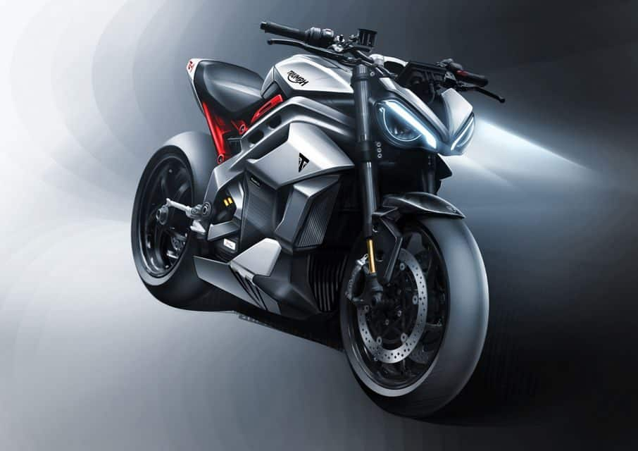

As Motos Elétricas mais modernas do momento.
Motos Elétricas de alta ou baixas cilindradas. Desenhadas por Designers, produzidas para atender todas as necessidades
Faça sua escolha!


Motos Elétricas de alta ou baixas cilindradas. Desenhadas por Designers, produzidas para atender todas as necessidades
Faça sua escolha!Cada X-Velox é única e possui a sua identidade. As tecnologias serão exatas para o suas necessidades, garantindo maior conforto e ergonomia e potência na pista. Você pode também escolher as suas cores .
Escolha um modelo
Toda X-Vlox é equipada com um motor elétrico que possui duração de até 120h. Mas também possui um tanque de gasolina reserva para não te deixar na mão.
Toda X-Vlox é equipada com um motor elétrico que possui duração de até 120h. Mas também possui um tanque de gasolina reserva para não te deixar na mão.